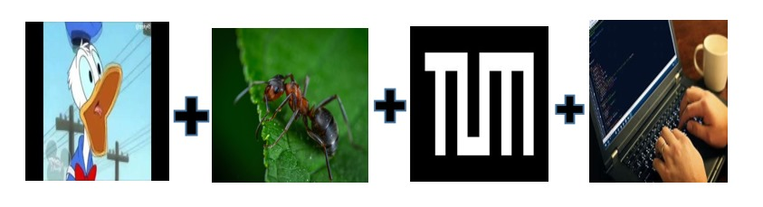
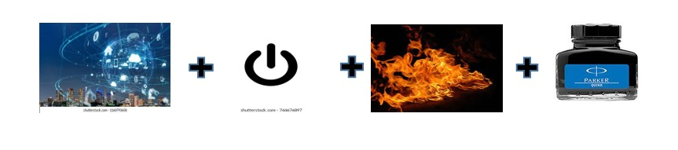
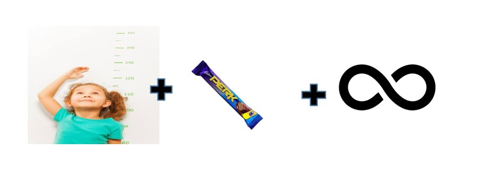

Connections
1.
Ans : Robotics
2.
Ans : 5G Technology or 5G Network
3.

Ans : Quantum Computing
4.

Ans : Internet of Things
5.

Ans : Hyperloop
Current Affairs
6. Which of the following futuristic mega-cities is often associated with innovative technology, sustainability, and ambitious urban development projects?
Ans : Neom City
Neom is a planned futuristic city and economic zone located in the northwest of Saudi Arabia. It is a mega-project that is part of Saudi Arabia's Vision 2030, which aims to diversify the country's economy and reduce its dependence on oil.
Neom is intended to be a hub for innovation, technology, and sustainable living. It is designed to cover a vast area and will include a variety of advanced technologies, including robotics, renewable energy sources, and automated transportation systems.
7. Who invented the first transistor?
Ans : William Shockley
The invention of the transistor is credited to three scientists: John Bardeen, Walter Brattain, and William Shockley. They developed the first working transistor at Bell Laboratories in 1947. This invention revolutionized the field of electronics and paved the way for the development of modern electronic devices.
8. Which is India's first crypto currency?
Ans : GanderCoin
GanderCoin was introduced to the market as India's first crypto coin.The peer-to-peer electronic money which aims to restructure conventional payment systems.
It allows online payments to be sent directly from peer to peer without going through a centralised body, GanderCoin as Indian crypto coin plans to replace the centralised hierarchies now used in the transaction process.GanderCoin is designed using Scrypt cryptography.
9. Which is India's first state to launch an AI anchor for news reading?
Ans : Odisha
Lisa is the very first AI anchor in the arena of free-to-air regional television broadcasting. Lisa possesses the remarkable ability to speak multiple languages, including Odia, English, and others.
10. What is the advantage of using biometric authentication over traditional methods like passwords or PINs?
Ans : Biometrics offer a high level of security and are difficult to forge.
Biometric authentication relies on unique physical or behavioral characteristics such as fingerprints, facial recognition, or iris scans, making it challenging for unauthorized individuals to replicate or forge these traits. This enhances security and reduces the risk of unauthorized access compared to passwords or PINs, which can be more easily compromised or stolen.
Technology and use cases
11. A company is looking to enhance the security of its data storage and prevent unauthorized access to sensitive information. What technology should they consider implementing?
Ans : Blockchain.
Blockchain technology is known for its strong security features, including decentralization and cryptographic mechanisms. It is particularly useful for maintaining the integrity and confidentiality of data, making it a valuable tool for enhancing data security and preventing unauthorized access.
12. A healthcare facility aims to reduce patient identification errors and enhance security for medical records. Which technology should they consider implementing?
Ans : Retina scanning.
Retina scanning is a biometric technology that can accurately verify a person's identity based on the unique patterns of blood vessels in the retina of the eye. This technology is highly secure and can help prevent identification errors and enhance the security of medical records.
13. A civil engineering company is working on a project to build a smart city with advanced infrastructure and digital connectivity. What technology is integral to this vision?
Ans : 5G networks.
5G networks provide high-speed, low-latency connectivity, which is essential for the implementation of various smart city technologies, including IoT devices, smart sensors, autonomous vehicles, and advanced communication systems. It's a foundational technology for enabling the connectivity and data transmission required for a smart city's infrastructure and digital services.
14. A design studio is looking to quickly prototype product designs and iterate on them. Which technology should they use to achieve rapid prototyping?
Ans : 3D printing.
3D printing technology allows for the quick and cost-effective production of physical prototypes, enabling designers to iterate on their product designs rapidly. It's a valuable tool for creating tangible prototypes and testing concepts before final production, making it a popular choice for design studios.
15. An e-commerce company wants to improve its customer service by offering personalized product recommendations. Which technology can help achieve this?
Ans : Machine learning and AI.
Machine learning and artificial intelligence can analyze customer behavior, preferences, and historical data to make personalized product recommendations, enhancing the customer shopping experience and increasing sales. These technologies can create algorithms that continually improve their recommendations as they gather more data, resulting in more effective and personalized suggestions.